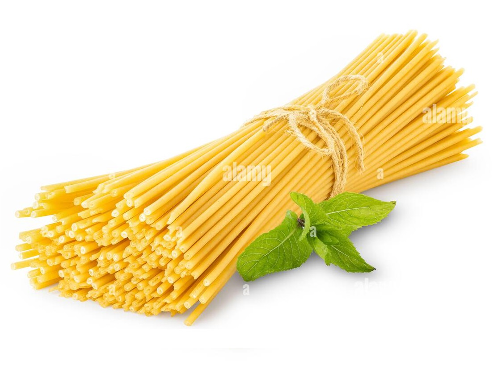

Sphagetti Squash Recipe
This hearty root vegetable dish is perfect for a winter meal.

Ingredients
- 1 medium spaghetti squash
- 2 tablespoons olive oil
- 1 teaspoon salt
- 1/2 teaspoon ground black pepper
- 1/4 cup grated Parmesan cheese
- 1 tablespoon chopped fresh basil
Instructions
- Preheat oven to 400 degrees F (200 degrees C).
- Slice the spaghetti squash in half lengthwise and scoop out the seeds.
- Drizzle the inside of the squash with olive oil and sprinkle with salt and pepper.
- Place the squash halves cut side down on a baking sheet and roast for about 40 minutes, or until tender.
- Remove from oven, let cool slightly, then use a fork to scrape out the strands of squash.
- Top with Parmesan cheese and fresh basil before serving.
Rate this Recipe:
★
★
★
★
★